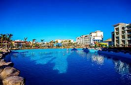
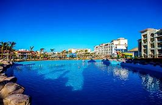

Hello this is tour .In a place like Egypt with its Ancient pyramids and beautiful beaches competition is understandabley steep.Located less than two hours South West of Cairo,Fayoun Oasis is on the countries hidden treasures.The Magic Lake is named as such thanks to its mesmerizing waters, which change color depending on the time of day and amount of sun exposure it gets.There's alot more to explore...Enjoy

 
